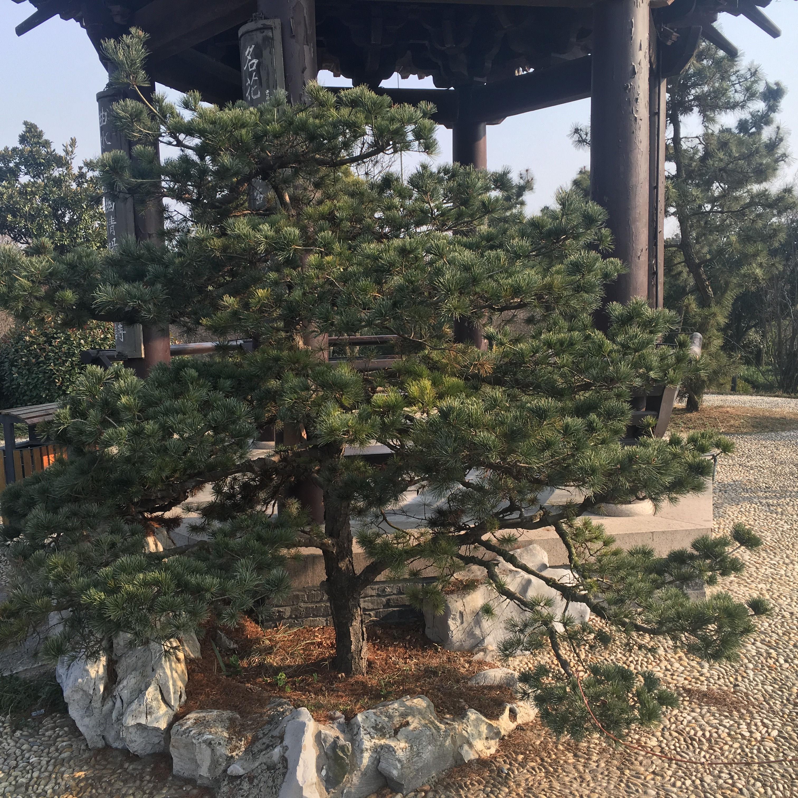
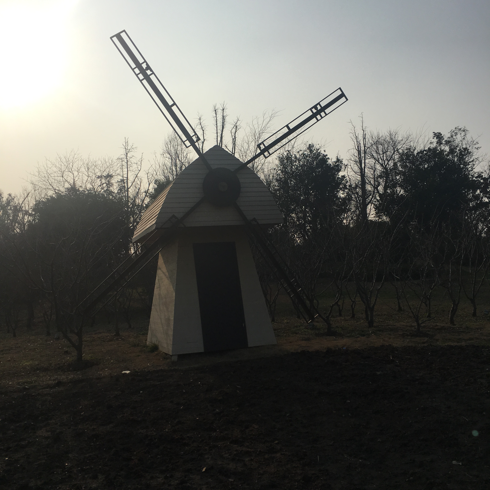
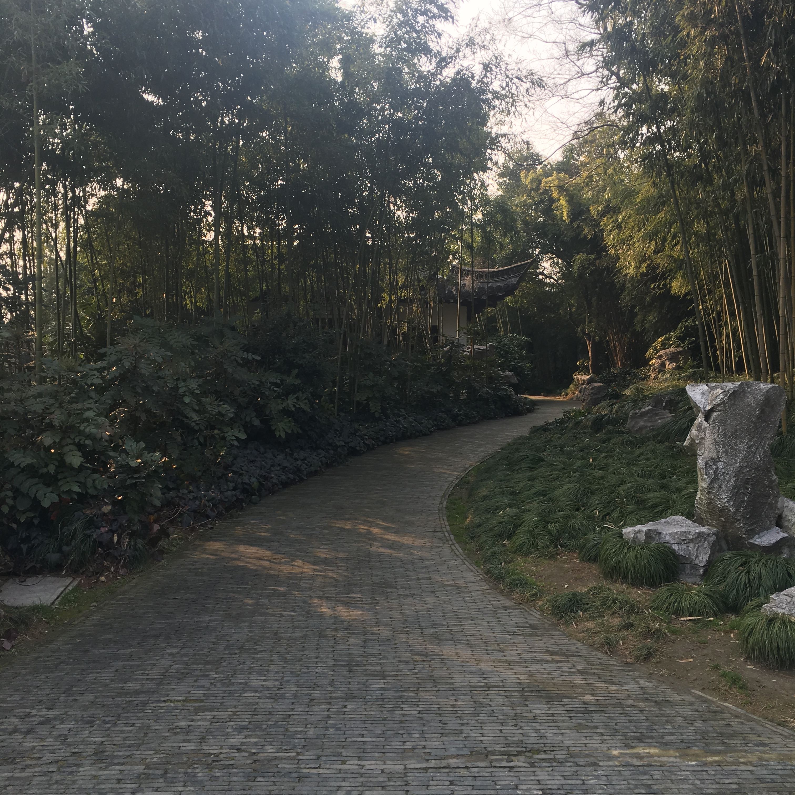
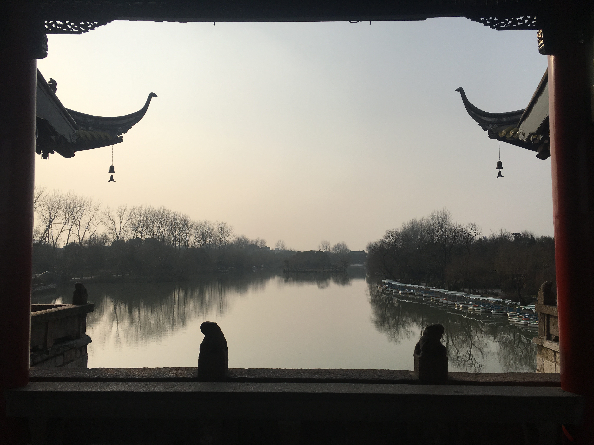
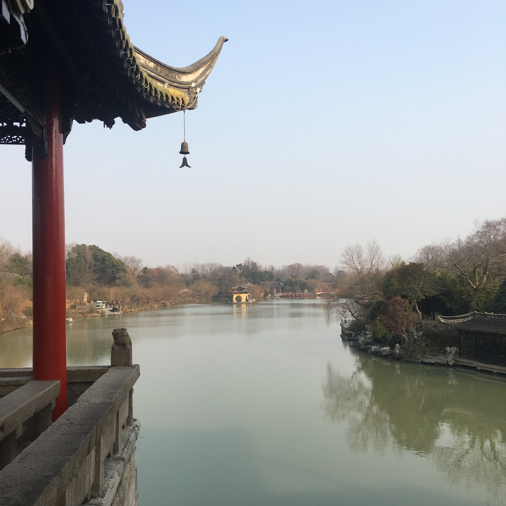

Slender West Lake
The Garden House, In The World
Slender West Lake, formerly lake, located in the northwest city of yangzhou city, jiangsu province, a total area of 2000 mu, water area of 700 mu, the heart area of 100 hectares."Slender West Lake" in the name of the qing dynasty is the earliest recorded in literature Wu Qi "yangzhou preached word order" : "north monohydrate PingShanTang, Slender West Lake, name lake."Of the first year of emperor qianlong (1736), qiantang (hangzhou) admiring poet wang kang hang came to yangzhou, after enjoyed the beautiful scenery here, with the Slender West Lake, located in the hometown of the spring-and-autumn way: "chueiyang constantly meet the residual weeds, wild goose tooth hongqiao yanyan drawing. Also pin a pot of gold, reason should be called slim."Slender West Lake in the qing dynasty the qing period has formed the basic pattern, has "the garden house, in the world" reputation.Slender West Lake is divided into 14 main attractions, including five pavilion bridge, twenty-four bridge, lotus pond, diaoyutai, etc.
瘦西湖原名保障湖，位于江苏省扬州市城西北郊，总面积2000亩，水上面积700亩，游览区面积100公顷。“瘦西湖”之名最早见于文献记载为清初吴绮《扬州鼓吹词序》：“城北一水通平山堂，名瘦西湖，本名保障湖。”乾隆元年（1736），钱塘（杭州）诗人汪沆慕名来到扬州，在饱览了这里的美景后，与家乡的西湖作比较，赋诗道：“垂杨不断接残芜，雁齿虹桥俨画图。也是销金一锅子，故应唤作瘦西湖。”瘦西湖在清代康乾时期已形成基本格局，有“园林之盛，甲于天下”之誉。瘦西湖主要分为14大景点，包括五亭桥、二十四桥、荷花池、钓鱼台等。




